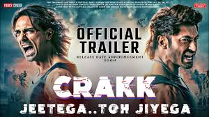

Neeraj Pandey (born 17 December 1973) is an Indian film director, producer and screenwriter who works in Hindi cinema. Pandey made his directoral debut in A Wednesday!, which was largely praised by critics and which later became a recipient of many accolades. His second film was Special 26 (2013), which was followed by Baby (2015), both of them received critical acclaim and became commercial success. He served as a producer in Rustom (2016). Pandey returned to directing in 2016 helming the biopic movie M.S. Dhoni: The Untold Story based on Indian cricketer M.S.Dhoni which fared well critically and commercially. Besides being a filmmaker, Pandey is also a writer and has written a novel named Ghalib Danger in 2013.
|  | |